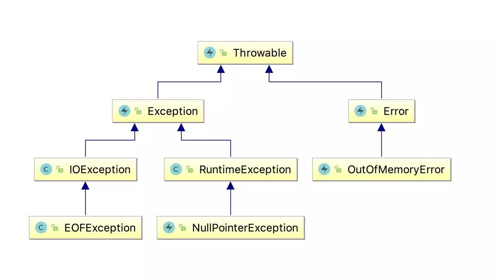

在项目中经常出现系统异常的情况，比如NullPointerException等等。如果默认未处理的情况下，springboot会响应默认的错误提示，这样对用户体验不是友好，系统层面的错误，用户不能感知到，即使为500的错误，可以给用户提示一个类似服务器开小差的友好提示等。
在微服务里，每个服务中都会有异常情况，几乎所有服务的默认异常处理配置一致，导致很多重复编码，我们将这些重复默认异常处理可以抽出一个公共starter包，各个服务依赖即可，定制化异常处理在各个模块里开发。
unified-dispose-springboot-starter
这个模块里包含异常处理以及全局返回封装等功能，下面。
完整目录结构如下：
├── pom.xml
├── src
│ ├── main
│ │ ├── java
│ │ │ └── com
│ │ │ └── purgetiem
│ │ │ └── starter
│ │ │ └── dispose
│ │ │ ├── GlobalDefaultConfiguration.java
│ │ │ ├── GlobalDefaultProperties.java
│ │ │ ├── Interceptors.java
│ │ │ ├── Result.java
│ │ │ ├── advice
│ │ │ │ └── CommonResponseDataAdvice.java
│ │ │ ├── annotation
│ │ │ │ ├── EnableGlobalDispose.java
│ │ │ │ └── IgnorReponseAdvice.java
│ │ │ └── exception
│ │ │ ├── GlobalDefaultExceptionHandler.java
│ │ │ ├── category
│ │ │ │ └── BusinessException.java
│ │ │ └── error
│ │ │ ├── CommonErrorCode.java
│ │ │ └── details
│ │ │ └── BusinessErrorCode.java
│ │ └── resources
│ │ ├── META-INF
│ │ │ └── spring.factories
│ │ └── dispose.properties
│ └── test
│ └── java异常处理
@RestControllerAdvice 或者 @ControllerAdvice为spring的异常处理注解。
我们先创建GlobalDefaultExceptionHandler 全局异常处理类：
@RestControllerAdvice
public class GlobalDefaultExceptionHandler {
private static final Logger log = LoggerFactory.getLogger(GlobalDefaultExceptionHandler.class);
/**
* NoHandlerFoundException 404 异常处理
*/
@ExceptionHandler(value = NoHandlerFoundException.class)
@ResponseStatus(HttpStatus.NOT_FOUND)
public Result handlerNoHandlerFoundException(NoHandlerFoundException exception) {
outPutErrorWarn(NoHandlerFoundException.class, CommonErrorCode.NOT_FOUND, exception);
return Result.ofFail(CommonErrorCode.NOT_FOUND);
}
/**
* HttpRequestMethodNotSupportedException 405 异常处理
*/
@ExceptionHandler(HttpRequestMethodNotSupportedException.class)
public Result handlerHttpRequestMethodNotSupportedException(
HttpRequestMethodNotSupportedException exception) {
outPutErrorWarn(HttpRequestMethodNotSupportedException.class,
CommonErrorCode.METHOD_NOT_ALLOWED, exception);
return Result.ofFail(CommonErrorCode.METHOD_NOT_ALLOWED);
}
/**
* HttpMediaTypeNotSupportedException 415 异常处理
*/
@ExceptionHandler(HttpMediaTypeNotSupportedException.class)
public Result handlerHttpMediaTypeNotSupportedException(
HttpMediaTypeNotSupportedException exception) {
outPutErrorWarn(HttpMediaTypeNotSupportedException.class,
CommonErrorCode.UNSUPPORTED_MEDIA_TYPE, exception);
return Result.ofFail(CommonErrorCode.UNSUPPORTED_MEDIA_TYPE);
}
/**
* Exception 类捕获 500 异常处理
*/
@ExceptionHandler(value = Exception.class)
public Result handlerException(Exception e) {
return ifDepthExceptionType(e);
}
/**
* 二次深度检查错误类型
*/
private Result ifDepthExceptionType(Throwable throwable) {
Throwable cause = throwable.getCause();
if (cause instanceof ClientException) {
return handlerClientException((ClientException) cause);
}
if (cause instanceof FeignException) {
return handlerFeignException((FeignException) cause);
}
outPutError(Exception.class, CommonErrorCode.EXCEPTION, throwable);
return Result.ofFail(CommonErrorCode.EXCEPTION);
}
/**
* FeignException 类捕获
*/
@ExceptionHandler(value = FeignException.class)
public Result handlerFeignException(FeignException e) {
outPutError(FeignException.class, CommonErrorCode.RPC_ERROR, e);
return Result.ofFail(CommonErrorCode.RPC_ERROR);
}
/**
* ClientException 类捕获
*/
@ExceptionHandler(value = ClientException.class)
public Result handlerClientException(ClientException e) {
outPutError(ClientException.class, CommonErrorCode.RPC_ERROR, e);
return Result.ofFail(CommonErrorCode.RPC_ERROR);
}
/**
* BusinessException 类捕获
*/
@ExceptionHandler(value = BusinessException.class)
public Result handlerBusinessException(BusinessException e) {
outPutError(BusinessException.class, CommonErrorCode.BUSINESS_ERROR, e);
return Result.ofFail(e.getCode(), e.getMessage());
}
/**
* HttpMessageNotReadableException 参数错误异常
*/
@ExceptionHandler(HttpMessageNotReadableException.class)
public Result handleHttpMessageNotReadableException(HttpMessageNotReadableException e) {
outPutError(HttpMessageNotReadableException.class, CommonErrorCode.PARAM_ERROR, e);
String msg = String.format("%s : 错误详情( %s )", CommonErrorCode.PARAM_ERROR.getMessage(),
e.getRootCause().getMessage());
return Result.ofFail(CommonErrorCode.PARAM_ERROR.getCode(), msg);
}
/**
* BindException 参数错误异常
*/
@ExceptionHandler(BindException.class)
public Result handleMethodArgumentNotValidException(BindException e) {
outPutError(BindException.class, CommonErrorCode.PARAM_ERROR, e);
BindingResult bindingResult = e.getBindingResult();
return getBindResultDTO(bindingResult);
}
private Result getBindResultDTO(BindingResult bindingResult) {
List<FieldError> fieldErrors = bindingResult.getFieldErrors();
if (log.isDebugEnabled()) {
for (FieldError error : fieldErrors) {
log.error("{} -> {}", error.getDefaultMessage(), error.getDefaultMessage());
}
}
if (fieldErrors.isEmpty()) {
log.error("validExceptionHandler error fieldErrors is empty");
Result.ofFail(CommonErrorCode.BUSINESS_ERROR.getCode(), "");
}
return Result
.ofFail(CommonErrorCode.PARAM_ERROR.getCode(), fieldErrors.get(0).getDefaultMessage());
}
public void outPutError(Class errorType, Enum secondaryErrorType, Throwable throwable) {
log.error("[{}] {}: {}", errorType.getSimpleName(), secondaryErrorType, throwable.getMessage(),
throwable);
}
public void outPutErrorWarn(Class errorType, Enum secondaryErrorType, Throwable throwable) {
log.warn("[{}] {}: {}", errorType.getSimpleName(), secondaryErrorType, throwable.getMessage());
}
}
大致内容处理了一些项目常见的异常Exception,BindException参数异常等。
这里将默认的404、405、415等默认http状态码也重写了。
重写这个默认的状态码需要配置throw-exception-if-no-handler-found以及add-mappings。
# 出现错误时, 直接抛出异常(便于异常统一处理，否则捕获不到404)
spring.mvc.throw-exception-if-no-handler-found=true
# 是否开启默认的资源处理，默认为true
spring.resources.add-mappings=falseps: 请注意这两个配置会将静态资源忽略。
请产考WebMvcAutoConfiguration#addResourceHandlers
Exception为了防止未知的异常没有防护到，默认给用户返回服务器开小差，请稍后再试等提示。
具体异常默认会以小到大去匹配。
如果抛出BindException,自定义有BindException就会去这个处理器里处理。没有就会走到它的父类去匹配，请参考java-异常体系。

其他已知异常可以自己用@ExceptionHandler注解进行捕获处理。
通用异常枚举
为了避免异常值不好维护，我们使用CommonErrorCode枚举把常见的异常提示维护起来。
@Getter
public enum CommonErrorCode {
/**
* 404 Web 服务器找不到您所请求的文件或脚本。请检查URL 以确保路径正确。
*/
NOT_FOUND("CLOUD-404",
String.format("哎呀，无法找到这个资源啦(%s)", HttpStatus.NOT_FOUND.getReasonPhrase())),
/**
* 405 对于请求所标识的资源，不允许使用请求行中所指定的方法。请确保为所请求的资源设置了正确的 MIME 类型。
*/
METHOD_NOT_ALLOWED("CLOUD-405",
String.format("请换个姿势操作试试(%s)", HttpStatus.METHOD_NOT_ALLOWED.getReasonPhrase())),
/**
* 415 Unsupported Media Type
*/
UNSUPPORTED_MEDIA_TYPE("CLOUD-415",
String.format("呀，不支持该媒体类型(%s)", HttpStatus.UNSUPPORTED_MEDIA_TYPE.getReasonPhrase())),
/**
* 系统异常 500 服务器的内部错误
*/
EXCEPTION("CLOUD-500", "服务器开小差，请稍后再试"),
/**
* 系统限流
*/
TRAFFIC_LIMITING("CLOUD-429", "哎呀，网络拥挤请稍后再试试"),
/**
* 服务调用异常
*/
API_GATEWAY_ERROR("API-9999", "网络繁忙，请稍后再试"),
/**
* 参数错误
*/
PARAM_ERROR("CLOUD-100", "参数错误"),
/**
* 业务异常
*/
BUSINESS_ERROR("CLOUD-400", "业务异常"),
/**
* rpc调用异常
*/
RPC_ERROR("RPC-510", "呀，网络出问题啦！");
private String code;
private String message;
CommonErrorCode(String code, String message) {
this.code = code;
this.message = message;
}
}其实starter包中不建议使用@Getter等lombok注解，防止他人未使用lombok依赖该项目出现问题。
通用业务异常
这两个类完成基本可以正常使用异常拦截了，不过为了业务方便，我们创建一个一般通用的业务异常。
BusinessException继承RuntimeException即可。
@Getter
public class BusinessException extends RuntimeException {
private String code;
private boolean isShowMsg = true;
/**
* 使用枚举传参
*
* @param errorCode 异常枚举
*/
public BusinessException(BusinessErrorCode errorCode) {
super(errorCode.getMessage());
this.code = errorCode.getCode();
}
/**
* 使用自定义消息
*
* @param code 值
* @param msg 详情
*/
public BusinessException(String code, String msg) {
super(msg);
this.code = code;
}
}将BusinessException加入GlobalDefaultExceptionHandler全局异常拦截。
/**
* BusinessException 类捕获
*/
@ExceptionHandler(value = BusinessException.class)
public Result handlerBusinessException(BusinessException e) {
outPutError(BusinessException.class, CommonErrorCode.BUSINESS_ERROR, e);
return Result.ofFail(e.getCode(), e.getMessage());
}程序主动抛出异常可以通过下面方式:
throw new BusinessException(BusinessErrorCode.BUSINESS_ERROR);
// 或者
throw new BusinessException("CLOUD800","没有多余的库存");通常不建议直接抛出通用的BusinessException异常，应当在对应的模块里添加对应的领域的异常处理类以及对应的枚举错误类型。
如会员模块：
创建UserException异常类、UserErrorCode枚举、以及UserExceptionHandler统一拦截类。
UserException:
@Data
public class UserException extends RuntimeException {
private String code;
private boolean isShowMsg = true;
/**
* 使用枚举传参
*
* @param errorCode 异常枚举
*/
public UserException(UserErrorCode errorCode) {
super(errorCode.getMessage());
this.setCode(errorCode.getCode());
}
}UserErrorCode:
@Getter
public enum UserErrorCode {
/**
* 权限异常
*/
NOT_PERMISSIONS("CLOUD401","您没有操作权限"),
;
private String code;
private String message;
CommonErrorCode(String code, String message) {
this.code = code;
this.message = message;
}
}UserExceptionHandler:
@Slf4j
@RestControllerAdvice
public class UserExceptionHandler {
/**
* UserException 类捕获
*/
@ExceptionHandler(value = UserException.class)
public Result handler(UserException e) {
log.error(e.getMessage(), e);
return Result.ofFail(e.getCode(), e.getMessage());
}
}最后业务使用如下：
// 判断是否有权限抛出异常
throw new UserException(UserErrorCode.NOT_PERMISSIONS);加入spring容器
最后将GlobalDefaultExceptionHandler以bean的方式注入spring容器。
@Configuration
@EnableConfigurationProperties(GlobalDefaultProperties.class)
@PropertySource(value = "classpath:dispose.properties", encoding = "UTF-8")
public class GlobalDefaultConfiguration {
@Bean
public GlobalDefaultExceptionHandler globalDefaultExceptionHandler() {
return new GlobalDefaultExceptionHandler();
}
@Bean
public CommonResponseDataAdvice commonResponseDataAdvice(GlobalDefaultProperties globalDefaultProperties){
return new CommonResponseDataAdvice(globalDefaultProperties);
}
}将GlobalDefaultConfiguration在resources/META-INF/spring.factories文件下加载。
org.springframework.boot.autoconfigure.EnableAutoConfiguration=\
com.purgetime.starter.dispose.GlobalDefaultConfiguration不过我们这次使用注解方式开启。其他项目依赖包后，需要添加@EnableGlobalDispose才可以将全局拦截的特性开启。
将刚刚创建的spring.factories注释掉，创建EnableGlobalDispose注解。
@Retention(RetentionPolicy.RUNTIME)
@Target(ElementType.TYPE)
@Import(GlobalDefaultConfiguration.class)
public @interface EnableGlobalDispose {
}使用@Import将GlobalDefaultConfiguration导入即可。
使用
添加依赖
<dependency>
<groupId>com.purgeteam</groupId>
<artifactId>unified-dispose-deepblueai-starter</artifactId>
<version>0.1.1.RELEASE</version>
</dependency>启动类开启@EnableGlobalDispose注解即可。
项目里很多重复的code，我们可以通过一定的方式去简化，以达到一定目的减少开发量。
示例代码地址:unified-dispose-springboot
作者GitHub:
Purgeyao 欢迎关注